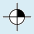
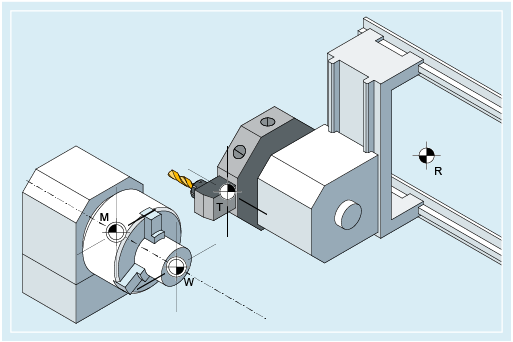
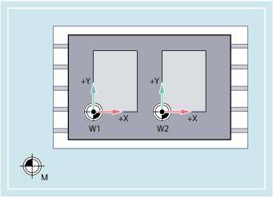

An einer NC-Maschine sind verschiedene Nullpunkte und Bezugspunkte definiert:
Nullpunkte |
|---|
| | M | Maschinen-Nullpunkt Mit dem Maschinen-Nullpunkt wird das Maschinen-Koordinatensystem (MKS) festgelegt. Auf den Maschinennullpunkt beziehen sich alle anderen Bezugspunkte. |
| | W | Werkstück-Nullpunkt = Programm-Nullpunkt Der Werkstücknullpunkt legt das Werkstück-Koordinatensystem in Bezug auf den Maschinennullpunkt fest. |
| | A | Anschlagpunkt Kann mit dem Werkstück-Nullpunkt zusammenfallen (nur bei Drehmaschinen). |
Bezugspunkte |
|---|
| | R | Referenzpunkt Durch Nocken und Messsystem festgelegte Position. Der Abstand zum Maschinen-Nullpunkt M muss bekannt sein, so dass die Achsposition an dieser Stelle exakt auf diesen Wert gesetzt werden kann. |
| | B | Startpunkt Per Programm festlegbar. Hier beginnt das 1. Werkzeug der Bearbeitung. |
|  | T | Werkzeugträgerbezugspunkt Befindet sich an der Werkzeughalteraufnahme. Durch Eingabe der Werkzeuglängen berechnet die Steuerung den Abstand der Werkzeugspitze vom Werkzeugträgerbezugspunkt. |
| | N | Werkzeugwechselpunkt |
Null- und Bezugspunkte beim Drehen

Nullpunkte beim Fräsen
